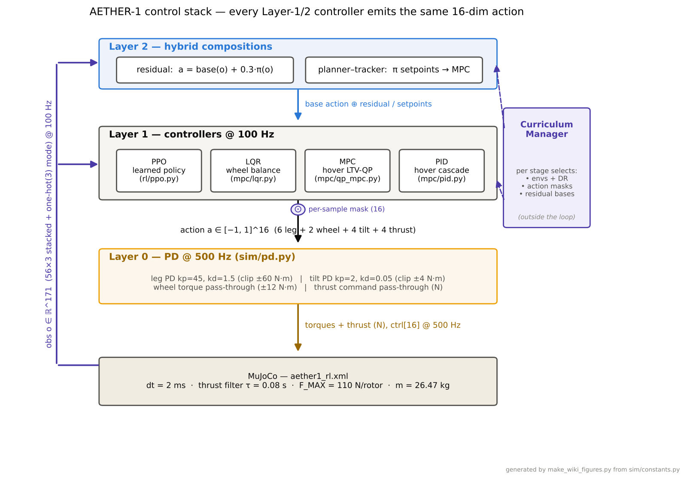
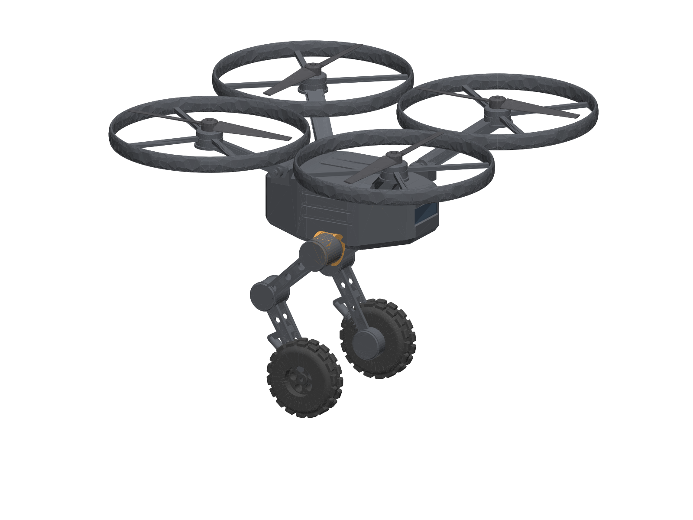

Robotics & AI engineer · Rouen, France
I build robots that learn to move, from equations to hardware.
I'm Mickyas Tamiru Asfaw, a robotics engineer focused on learned control for mobile robots: hand-written reinforcement learning, classical control (MPC/LQR/PID), and the sim-to-real engineering that makes policies survive contact with reality.
- Role
- Robotics & AI Engineer
- Previously
- AI Robotics R&I Engineer, CESI LINEACT (Feb 2025 – Jul 2026)
- Base
- Rouen, France
- Now
- AETHER-1, a hybrid ground–air robot
- Tilt θ
- +0.0°
- Rate
- +0°/s
- Wheel cmd
- +0.0N
- Ctrl
- LQR
01 Flagship
AETHER-1: a hybrid legged-wheeled-aerial robot
One robot that drives for hours and flies for minutes: a self-balancing two-wheel base with four tilting rotors, controlled by a single reinforcement-learning policy trained through a performance-gated curriculum. The fly-or-drive decision is learned from an energy-priced reward, not hard-coded.
- final curriculum gate success
- 0.995
- one policy, one continuous run
- 6 stages
- verified physics & training stack
- 250 tests
- drive vs hover energy asymmetry
- ~10×
- domain randomization for sim2real
- 36 axes
- Mk1 hardware prototype target
- 15 kg
Simulation-validated · hardware prototype in development
From a blank MuJoCo file to a deployable control stack
From-scratch PPO (no RL libraries) beside an MPC/LQR/PID classical stack. One policy advances through six curriculum stages: balance, drive, hover, 3D flight, takeoff/landing, and free drive-or-fly arbitration, without forgetting earlier skills.
Source code is private while the IP and hardware program are in progress. To talk details, get in touch.

Two-layer control architecture: training inside verification gates, deployment composing the learned policy with the classical stack.

The Mk1 prototype CAD, generated parametrically from one parameter file.
02 Selected work
Robots that balance, navigate, and transfer from simulation to the real world.
-
01
mybot: two-wheeled bipedal robot
A wheeled biped that learns to self-balance and drive to goals with a hand-written PPO (no RL libraries), a ROS 2 + Gazebo training pipeline, MuJoCo verification, and a staged curriculum from balance to goal navigation.
Case studyCode private -
02
DRL collision-avoidance system
Vision-based quadrotor collision avoidance in Gazebo, learned from scratch: a TD3 baseline reads stacked depth frames plus a goal direction, and a recurrent-PPO extension flies genuine detours around occluders, 80% deterministic success on the detour task.
Case studyCode private -
03
DRL robot navigation + live SLAM (TD3)
A TD3 agent drives a Pioneer 3-DX through cluttered rooms in ROS 2 + Gazebo, reaching random goals collision-free from 3D-LiDAR input while slam_toolbox maps the room live, turning a goal-reaching policy into autonomous exploration. GIPSA-Lab project (Grenoble INP), documented in a published paper.
-
04
Duckiebot: from sim to real
Reinforcement learning for lane following trained in the Duckietown simulator and transferred to a physical Duckiebot: domain adaptation, deployment pipeline, and real-world evaluation.
-
05
Wheeled quadruped robot
Learning project, grown well past the start: a segway-style wheeled quadruped learns to balance and drive with PPO in NVIDIA Isaac Lab. An asymmetric actor-critic keeps the deployed policy on onboard-only sensing across 2048 GPU-parallel environments. Four trained policies (balance and velocity, on flat and rough terrain), exported to ONNX and TorchScript, and validated sim-to-sim in a second physics engine (MuJoCo).
-
06
Aerial Gym: multi-agent avoidance
Contributor to the Aerial Gym Simulator: multi-agent quadcopter collision avoidance trained with TD3 / SAC in Isaac Gym, massively parallel GPU simulation for aerial swarms.
-
07
Quadrotor modeling & LQR control
Full dynamic modeling of a quadrotor UAV with an LQR-with-integral-action controller, designed, simulated, and validated on real hardware with a Parrot Mambo position-control flight test.
-
08
Robust lateral vehicle control
LPV/H-infinity and LPV/LQR controllers for lateral control of autonomous vehicles: robust stability and performance across varying operating points.
-
09
5-axis palletizing robot arm
A 5-axis palletizing arm designed and prototyped at Heineken Brewery: CAD in SolidWorks, dynamics in MATLAB/Simulink and CoppeliaSim, Arduino control with a custom Android HMI.
03 Track record
Experience
Research and engineering roles across robot perception, learned control, and hardware, from digital twins most recently back to my first mechatronics prototypes.
-
Feb 2025 – Jul 2026Rouen, France
AI Robotics Research & Innovation Engineer
CESI · LINEACT Research Laboratory
- Built 3D Gaussian Splatting digital twins of industrial and nuclear environments, including an ArUco-based COLMAP metric-rescaling pipeline for a nuclear site at Orano.
- Deployed FoundationPose 6-DoF object pose estimation to keep digital twins updated live, with SAM2/SAM3, Depth Anything V3, and YOLO-6D perception.
- Developed an XR/VR teleoperation interface for the Ubik mobile robot and multi-sensor (MoCap / RGB-D / IMU) calibration.
-
Mar – Aug 2024Toulouse, France
Robotics Engineer Intern
IRT Saint Exupéry
- Trained deep-RL policies (DDPG / TD3 / SAC) for autonomous lane following on Duckietown, using auto-encoder latent states and a contrastive-learning buffer (+18.3% task performance).
- Achieved sim-to-real transfer to a Jetson-Nano robot with domain randomization, deployed via Docker + ROS 2.
-
Jul – Oct 2021Addis Ababa, Ethiopia
Robotics Engineer Intern
Heineken Brewery S.C.
- Designed and prototyped a 5-axis palletizing robot arm in SolidWorks, with dynamics in MATLAB/Simulink and CoppeliaSim.
- Built the control system on Arduino with a custom Android HMI.
Publications
Published
-
IntRob '26, Budapest
Benchmarking Open-Source Segmentation and Metric Monocular Depth Methods in 6DoF Object Pose Estimation with FoundationPose
-
ICPR Workshops, Lyon
Mind the Domain Gap: Benchmarking Structure-from-Motion Methods on Paired Industrial Physical-Digital Twin Datasets to Enable Radiance Field Rendering
In progress
-
Being finalised for submission
Differentiable Render-and-Compare for 6-DoF Object Pose Rectification
-
Under review
Array (Elsevier)Exploring the Physical and Digital Domain Gap in 3D Reconstruction: A Benchmark of Radiance Field Rendering Techniques on Paired Industrial Twins
Education
Grenoble, France
M2: Mobile, Autonomous & Robotic Systems (TSI)
Grenoble Institute of Technology (INP) – ENSE3 · GPA 15.53/20 (~3.9/4)
MSc: Electromechanical (Mechatronics) Engineering
GPA 3.92/4
Addis Ababa Science & Technology University
BSc: Electromechanical Engineering
GPA 3.94/4
04 Toolbox
Skills & stack
Reinforcement learning
- PPO (from scratch)
- TD3
- Curriculum learning
- Reward design
- Domain randomization
- Sim2Real
Control theory
- MPC (OSQP)
- LQR
- Cascade PID
- State estimation
- Residual RL
Simulation & robotics
- MuJoCo
- Gazebo
- ROS 2
- URDF / MJCF
- PyBullet / Isaac
Perception & digital twins
- 3D Gaussian Splatting
- COLMAP / SfM
- FoundationPose
- SAM2 / SAM3
- Depth Anything
- Open3D
- Unity / XR
Engineering
- Python, PyTorch, C++
- CAD (SolidWorks / CadQuery), CATIA V5
- PX4 / Jetson, Docker
- Isaac Gym
- SLAM / Nav2
- Stable-Baselines3
- CI & testing
05 About
Engineering philosophy
A controller you derived, implemented, and unit-tested is one you can debug at 3 a.m. when the robot does something strange.
I like building the whole stack myself, not because libraries are bad, but because a controller you derived, implemented, and unit-tested is one you can debug at 3 a.m. when the robot does something strange. My PPO implementations are written from the equations up; my reward functions are audited for economic exploits; my simulations carry verification gates that block training when the physics stops making sense.
The thread through my work is locomotion that has to earn trust: statically unstable bases that must balance to exist, aerial systems where the landing is the hard part, and policies that transfer from simulation to hardware because the gap was engineered away: measured latencies, calibrated actuators, and domain randomization on the axes that actually matter.
Right now that thread leads through AETHER-1: taking a simulation-validated hybrid robot to a physical prototype, and toward inspection missions neither drones nor ground robots can complete alone.
- Focus
- Learned control & robot perception
- Role
- Robotics & AI Engineer (previously CESI LINEACT, Feb 2025 – Jul 2026)
- Base
- Rouen, France
- Current
- AETHER-1 hardware prototype (Mk1, 15 kg)
- Approach
- From-scratch implementations, test-gated pipelines
- Open to
- Collaborations, pilots, robotics conversations
06 Contact
Let's build robots that work.
Whether it's reinforcement learning that has to run on real hardware, a control problem that refuses to behave, or the AETHER-1 program, I'd love to hear from you.